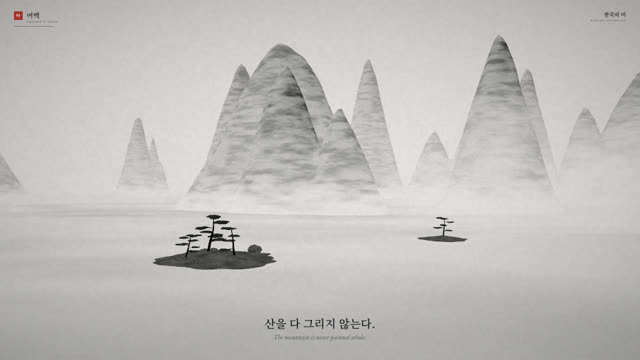
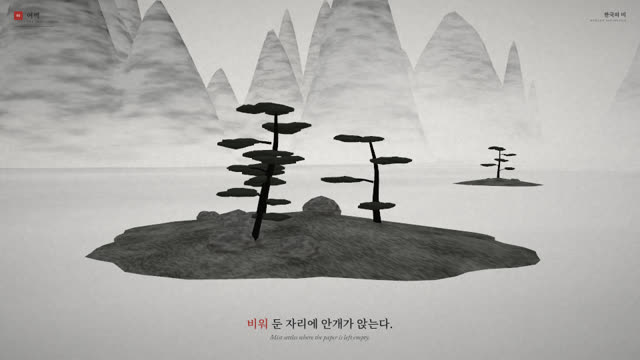
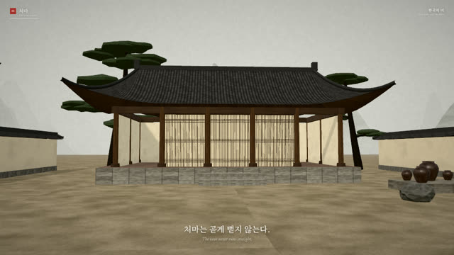
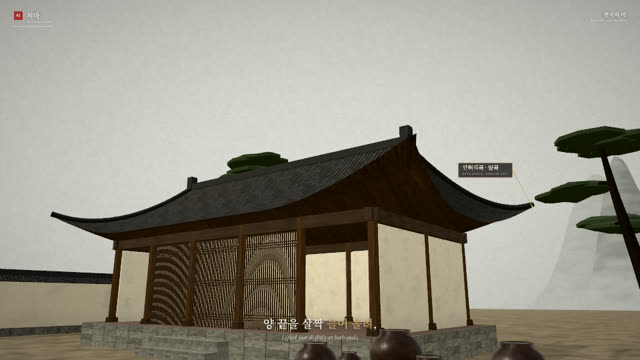
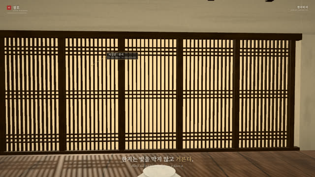
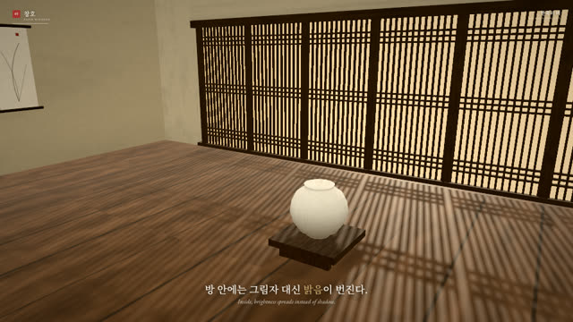
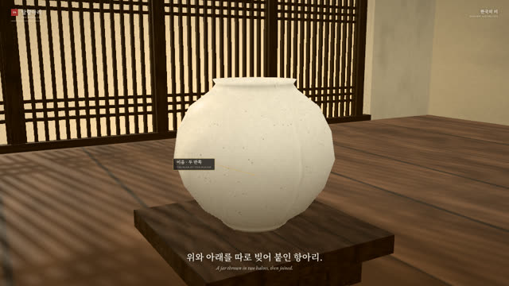
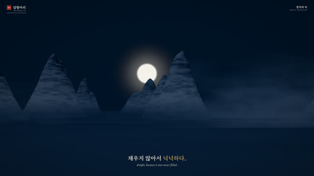
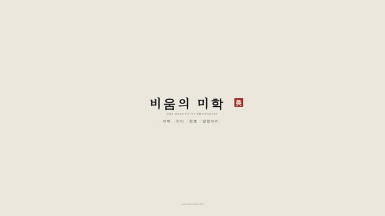

작업 흐름
- 입력
- 주제 하나 (한 문화의 미감, 공예, 재료, 건축, 생각)
- 브리프
- 한 줄 논지, 출처를 단 사실, 3–6개의 장과 장마다 두세 줄의 자막, 주제에 맞춰 새로 설계한 세트 · 사물 · 색 · 음계
- 장면
- 코드로 지은 3D 세트, 장마다 천천히 움직이는 샷 한두 개, 장 사이 종이로 번지는 전환, 사물에 붙는 설명 라벨
- 소리
- 현을 뜯는 소리 · 피리 · 저음 · 종으로 합성한 음악, 장마다 분위기
- 출력
- 1920×1080 MP4, 소리 나는 라이브 페이지, BRIEF.md
cd aesthetics-film/examples/korean-beauty
node ../../scripts/check.mjs index.html
node ../../scripts/render.mjs index.html --sheet 16 --scale .5
node ../../scripts/score.mjs index.html
node ../../scripts/render.mjs index.html --audio out/score.wav
node ../../scripts/new-film.mjs ~/my-film # 새 영상
node ../../scripts/fonts.mjs ~/my-film/film.html요구 사항: Node + Playwright Chromium, ffmpeg, 글꼴을 받을 때 한 번 네트워크. npm 설치 · GPU · API 키는 필요 없습니다. 단계별 순서는 SKILL.md에 있습니다.
샘플
예제와 템플릿의 장면입니다. 카드를 누르면 라이브 데모가 그 장면에서 열립니다.
비움의 미학 · 한국의 미 예제 · 58초 · 4장
원본은 중국의 미학을 다뤘습니다. 이 예제는 다른 문화를 주제로 브리프부터 세트 · 사물 · 색 · 음악을 새로 설계했습니다: 수묵화의 여백, 들어 올린 처마, 빛을 거르는 한지, 두 반쪽을 붙인 달항아리.

01 여백 · 3초산을 다 그리지 않는다종이 프리셋: 산자락이 안개 바다로 녹아듦

01 여백 · 8초비워 둔 자리강조어 "비워"는 낙관 빨강

02 처마 · 13초한옥 마당팔작지붕(hip .55), 장독대, 담장 — 모두 이 주제를 위해 지음

02 처마 · 18초안허리곡 · 앙곡처마 모서리를 따라 오르는 카메라와 설명 라벨

03 창호 · 28초빛을 거르는 한지해가 오르며 한지의 빛이 번짐

03 창호 · 33초마루에 번진 창살창살만 그림자를 드리우고 한지는 빛을 통과시킴

04 달항아리 · 39초두 반쪽의 이음둘레를 도는 카메라를 따라 이음 위에 머무는 라벨

04 달항아리 · 49초채우지 않아서 넉넉하다항아리에서 달로 겹쳐 넘어가는 전환, 밤 프리셋

카드 · 56초비움의 미학붓 획 → 제목과 낙관 → 한 줄
一盏灯 · A Lantern 템플릿 · 28초 · 2장
새 영상의 시작점입니다. 장 배지, 자막, 설명 라벨, 종이 전환, 제목 카드를 한 번씩 보여 줍니다. 주제가 등불이 아니면 그대로 쓰지 않습니다.
실제 작품
이 스킬은 X 게시물로 공유된 영상 한 편을 보고 만들었습니다. 원본 레포는 없고, 스틸을 보며 장 구성 · 화면 문법 · 색 · 카메라를 읽어 코드로 다시 세웠습니다. 원본의 글 · 장면 · 이름은 가져오지 않았습니다.
링크
- SKILL.md 워크플로
- 폴더 lib · scripts · references · templates · examples
- README.md 빠른 시작
- references/BRIEF.md 고정되는 것과 주제마다 설계하는 것, 검토 기준
- references/ESSAY.md 논지 → 장 → 자막 → 샷
- references/LOOK.md 원본에서 읽은 화면 문법과 값
- references/KIT.md 세트 · 사물 · 음악 API
- references/LESSONS.md 겪은 문제와 해결